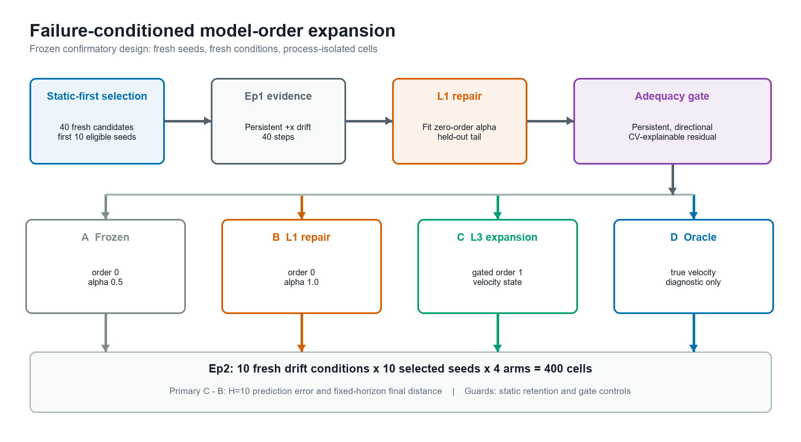
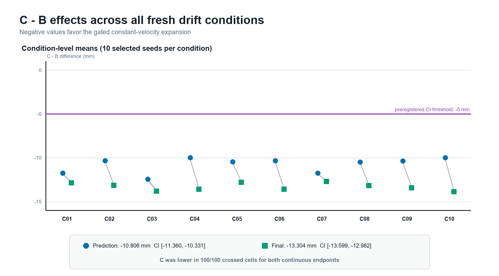
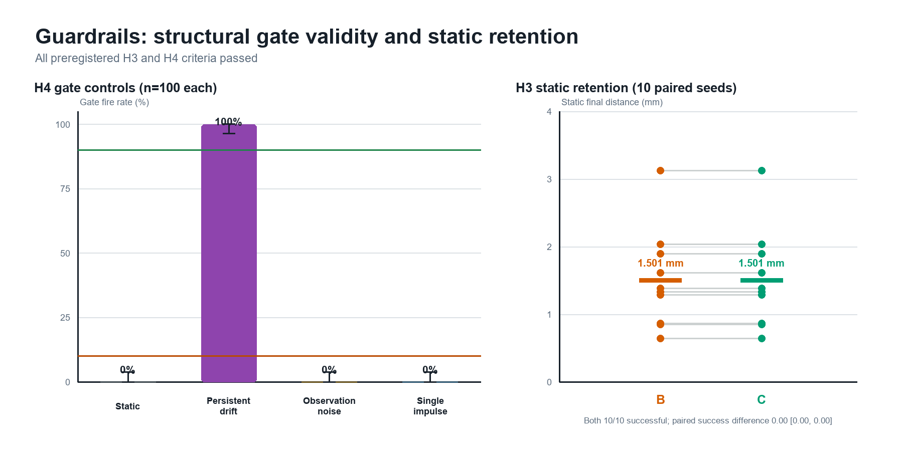

An embodied controller can fail because its parameters are wrong — or because its model is missing a state variable the dynamics actually depend on. This paper tests, in simulation, whether observed failure evidence can tell those two cases apart.
Central question
When persistent, structured task failure survives the best repair available inside the current model class, does a prepared increase in model order improve prediction-linked control — without nominal regression?
Approach

In an Isaac Sim surgical-reach environment, a zero-order target model is exposed to persistent drift on a shared Episode 1 trace, then repaired within its own model class. A preregistered adequacy gate asks whether the remaining residual is persistent, directional, and better explained by a prepared constant-velocity alternative.
Episode 2 compares four arms — frozen zero order, repaired zero order, gated constant velocity, and a velocity oracle — holding the Cartesian controller fixed across 10 fresh seeds × 10 fresh drift conditions, with every seed–arm–condition cell in its own Isaac process.
Results
| Endpoint | B · repaired zero order |
C · gated const. velocity |
C − B |
|---|---|---|---|
| H=10 prediction error | 18.401 mm | 7.595 mm | −10.806 mm95% CI [−11.360, −10.331] |
| Fixed-horizon final distance | 18.905 mm | 5.601 mm | −13.304 mm95% CI [−13.599, −12.982] |
| 20 mm resolution rate | 76% | 100% | secondary |
| Static retention | 10/10 | 10/10 | non-inferior |

The adequacy gate fired on 100/100 persistent-drift trials and 0/100 on each of the static, observation-noise, and single-impulse controls — the expansion activated when structure was present and stayed silent when it was not.

On figures: every panel here is plotted directly from the frozen confirmatory artifact, and nothing is a stand-in.